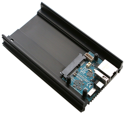

Using Nextcloud with Odroid HC1
written by ushills on 2019-03-09
For those that do not know Nextcloud is an open-source alternative to Dropbox, that you can host yourself on a Virtual Private Server (VPS), like Amazon EC2, Digital Ocean Droplets or your own on-premise server. As such not only do only you have access to your information (enhanced privacy) but the side benefit is that you learn some server administration along the way.
I have been using Nextcloud for a number of years now on a Raspberry Pi 3 and although I was happy with the performance, the Raspberry Pi is slightly limited with disk access speed due to only having USB 2.0 connections.
While searching for a replacement I came across the Odroid HC1 which is designed to work as a home server. The Odroid HC1 comes with a SATA connection to connect to an internal 2.5' hard drive and has plenty of horsepower with Eight Cores (Samsung Exynos5422 ARM® Cortex™-A15 Quad 2.0GHz/Cortex™-A7 Quad 1.4GHz), 2GB of DDR3 Ram and a large heat sink on the bottom. I have a hard disk drive connected to mine but you could just as easily use an SSD.

With the native SATA connection and Gigabit Ethernet, the HC1 is a significant upgrade over the Raspberry Pi (even the 3B+) and is equivalent to most VPS.
Having used many different operating systems on single board computers (SBC) in the past, this SBC is well supported by Armbian which is a fork of Debian, however, other OS's such as DietPi and others are also available and stable.
In my next post, I will explain how I installed Nextcloud and some of the important choices I made to improve the resilience of this self-hosted installation.